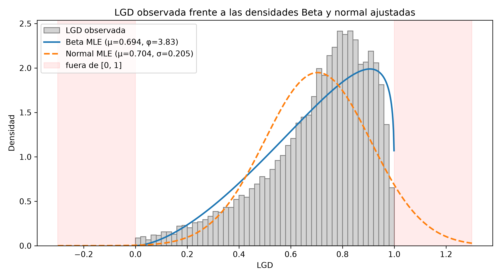
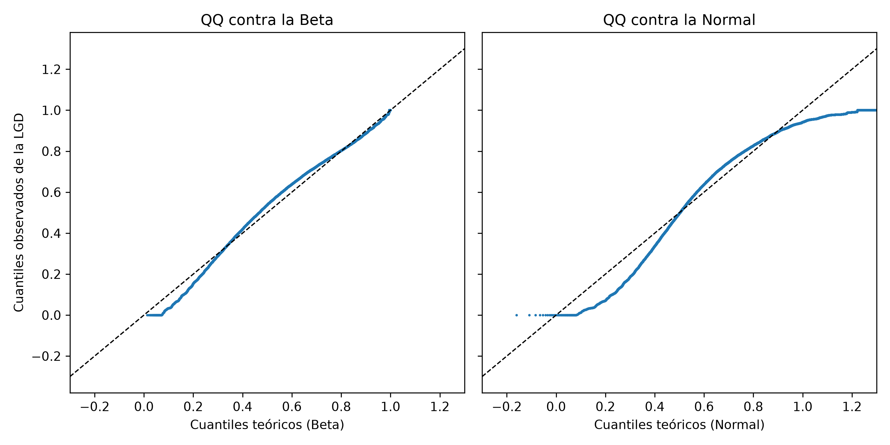
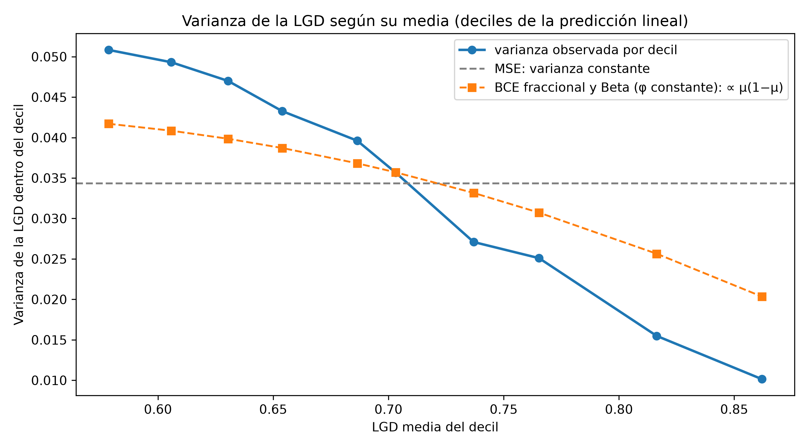
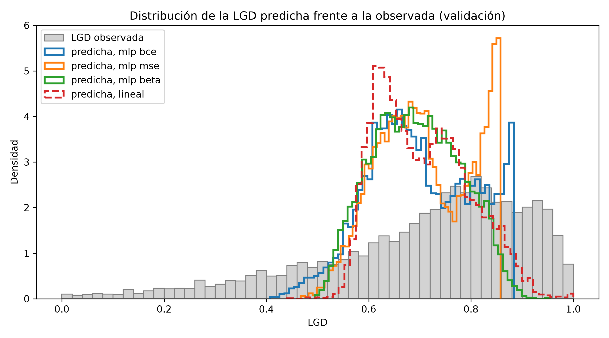
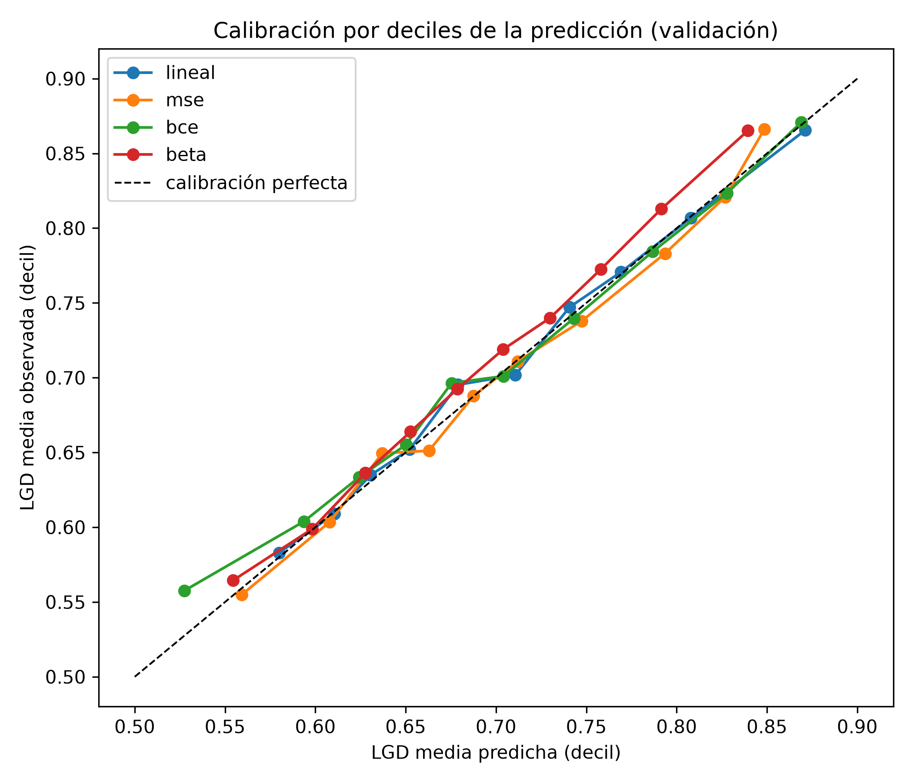
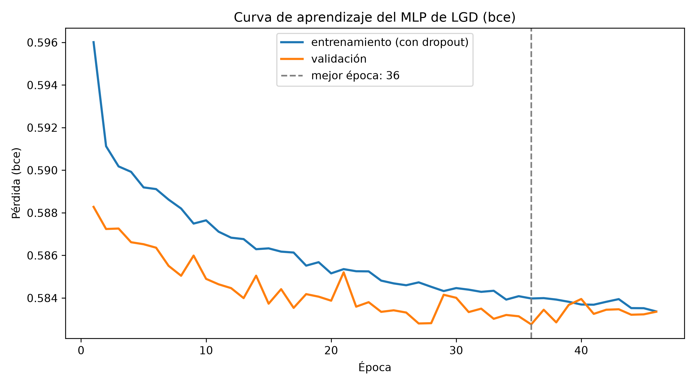

HIPÓTESIS / H1
Más deuda, mayor riesgo
DTI sobre el percentil 75 frente a DTI menor de 15: tasa de incumplimiento 24,9 % vs 15,8 % (entrenamiento) y 36,2 % vs 19,1 % (2015).
CONFIRMADAUn laboratorio interactivo para explorar cómo se estima el riesgo de crédito. Comparamos un modelo interpretable con una red neuronal y examinamos qué ocurre cuando cambian las características de un solicitante.
Caso de uso: pre-aprobación de un crédito de consumo. Solo se piden datos declarados por el solicitante y de buró que existen antes del desembolso. Los campos vienen de los modelos guardados.
Si dejas un campo vacío, el modelo usa la mediana (números) o la moda (categorías) del entrenamiento; el resultado te dice cuáles se completaron así.
Esperando respuesta de la API…
Se compara con el perfil de arriba cambiando solo esa característica; el resto se mantiene igual.
El preprocesador guardado exige 28 variables. El formulario pide las 21 que un solicitante puede declarar o consultar en buró. Las otras siete se fijan: funded_amnt y funded_amnt_inv (= monto solicitado, que además es la EAD), policy_code = 1, pymnt_plan = n, application_type = INDIVIDUAL, initial_list_status (moda del entrenamiento) y earliest_cr_line. Esta última no se pregunta porque en el preprocesador todas sus categorías mes-año quedaron agrupadas como «infrecuentes» (menos de 1 % cada una), así que no cambia ninguna predicción. Variables de fuga (grade, int_rate, pagos, recuperaciones) no existen en el modelo. Significados: LCDataDictionary.xlsx del conjunto de Kaggle (pasa el cursor sobre ⓘ).
Métricas leídas de results/tables al cargar la página: prueba temporal (originaciones de 2015).
Imágenes generadas por el código del repositorio (results/figures).
La ruta del proyecto: separar correctamente los datos, evaluar con métricas complementarias y documentar límites.
Crear la etiqueta a partir de loan_status y excluir estados sin resultado final confirmado.
Crear train, validación y prueba; reservar originaciones recientes para evaluar generalización.
Usar el mismo preprocesamiento y particiones para referencia logística y perceptrón multicapa.
Revisar discriminación, calibración, variabilidad, complejidad y limitaciones de uso.
Derivaciones completas del reporte técnico. Despliega un tema para leerlo.
Esta parte tiene dos bloques. El primero deriva cada función de pérdida del proyecto a partir de un modelo probabilístico. El segundo aplica esas derivaciones a la LGD: fija la activación de salida, las candidatas, el criterio de selección y unas predicciones, antes de la búsqueda de hiperparámetros, para que la elección no se justifique a posteriori con el resultado que salió mejor por azar.
Nota de versión: las cifras de la segunda parte se recalcularon cuando el equipo volvió a sortear la partición aleatoria (
split_seed: 90). Ninguna conclusión cambió.
Sean $n$ observaciones independientes $(x_i, y_i)$ y un modelo $p(y \mid x; \theta)$. La máxima verosimilitud elige $\theta$ maximizando $\prod_i p(y_i \mid x_i; \theta)$, lo que equivale a minimizar la log-verosimilitud negativa promedio (NLL):
En todos los modelos del proyecto, la red (o la regresión) produce un número real $z_i = f(x_i; \theta)$, el logit, y el parámetro de la distribución se obtiene de él. Por la regla de la cadena,
donde $\ell_i$ es el término del dato $i$. El segundo factor lo calcula la retropropagación (ver Retropropagación); lo que cambia de una pérdida a otra es el primero, $\partial \ell_i / \partial z_i$, que se deriva abajo para cada caso. Se usará la sigmoide $\sigma(z) = 1/(1+e^{-z})$ y su derivada $\sigma'(z) = \sigma(z)\,(1-\sigma(z))$.
Modelo. $Y \mid x \sim \text{Bernoulli}(\mu)$ con $\mu = \sigma(z)$, de modo que $p(y \mid x) = \mu^{y}(1-\mu)^{1-y}$ para $y \in \lbrace 0, 1 \rbrace$.
Pérdida. Tomando $-\ln p$:
Forma estable. Como $\ln \sigma(z) = -\ln(1+e^{-z})$, $\ln(1-\sigma(z)) = -\ln(1+e^{z})$ y $\ln(1+e^{-z}) = \ln(1+e^{z}) - z$,
Esta es la forma que se implementa (bce_con_logits en src/models/losses.py), con
$\ln(1+e^{z})$ calculado como logaddexp(0, z): no hay desbordamiento con logits grandes y se evita
calcular $\ln 0$ cuando la sigmoide se redondea a 0 o a 1.
Gradiente. $\dfrac{\partial \ell_i}{\partial z_i} = \sigma(z_i) - y_i = \mu_i - y_i$. No contiene el factor $\sigma'(z)$, así que no se apaga cuando la red está muy segura y se equivoca.
Regresión logística. Es el caso $z = \beta_0 + \beta^\top x$: la logística de referencia de PD se estima minimizando exactamente esta pérdida (más la penalización; ver Optimizador y regularización). Su hessiano, $\frac{1}{n}\sum_i \mu_i(1-\mu_i)\,x_i x_i^\top$, es semidefinido positivo, así que el problema es convexo. La red de PD usa la misma pérdida con $z$ dado por el MLP.
Modelo. $Y \mid x \sim \mathcal{N}(\mu, s^2)$ con varianza $s^2$ constante:
Con $s^2$ fijo, el primer término no depende de $\theta$ y el factor $1/(2s^2)$ no cambia el minimizador, así que minimizar la NLL equivale a minimizar $\frac{1}{n}\sum_i (y_i - \mu_i)^2$.
mse_con_logits): $\mu = \sigma(z)$ yEl factor $\mu(1-\mu)$ tiende a 0 cuando la sigmoide satura: si la red predice 0,999 para un crédito con
LGD 0,1, el gradiente es casi nulo (test_mse_se_satura_con_logits_extremos).
Pérdida. Es la propuesta de Papke y Wooldridge (1996) para respuestas fraccionales: la misma
expresión de la BCE, $\ell_i = \ln(1+e^{z_i}) - y_i z_i$, pero con $y_i$ continua
en $[0, 1]$ (bce_fraccional_con_logits, que es la que devuelve get_loss("bce")).
No es una verosimilitud. $\mu^{y}(1-\mu)^{1-y}$ no integra 1 sobre $[0, 1]$: $\int_0^1 \mu^{y}(1-\mu)^{1-y}\,dy = (2\mu - 1)/\ln\frac{\mu}{1-\mu}$, que vale 0,5 en $\mu = 0{,}5$. Por eso se habla de cuasi-verosimilitud (Wedderburn, 1974): solo se especifica la media, $E[Y \mid x] = \sigma(z)$, y la forma de la pérdida corresponde a suponer $\text{Var}(Y \mid x) \propto \mu(1-\mu)$.
Por qué funciona. Fijado $x$, sea $m = E[Y \mid x]$. La pérdida esperada es
$-[\,m \ln \mu + (1-m)\ln(1-\mu)\,]$ y su derivada respecto a $\mu$,
$-m/\mu + (1-m)/(1-\mu)$, se anula en $\mu = m$. El minimizador es la media condicional cualquiera
que sea la distribución de $Y$ (test_bce_fraccional_estima_la_media).
Gradiente. Igual que en la BCE: $\partial \ell_i / \partial z_i = \mu_i - y_i$. Acepta 0 y 1 exactos sin tratamiento especial.
Modelo. Con la parametrización de Ferrari y Cribari-Neto (2004), $Y \mid x \sim \text{Beta}(a, b)$ con $a = \mu\phi$, $b = (1-\mu)\phi$, $\mu = \sigma(z)$ y una precisión $\phi > 0$ común que se aprende como $\phi = e^{\eta}$. Así $E[Y] = \mu$ y $\text{Var}(Y) = \mu(1-\mu)/(1+\phi)$. La densidad es
y la pérdida (beta_con_logits)
Gradientes. Con $\psi$ la función digamma y usando $\partial a/\partial z = \phi\mu(1-\mu)$ y $\partial b/\partial z = -\phi\mu(1-\mu)$:
Como $E[\ln Y] = \psi(a) - \psi(\phi)$ y $E[\ln(1-Y)] = \psi(b) - \psi(\phi)$, el primer gradiente se anula en promedio cuando el modelo reproduce $E[\ln Y - \ln(1-Y)]$: la máxima verosimilitud de la Beta iguala log-momentos, no la media (consecuencia que se verifica con datos más abajo, en Las tres candidatas frente a los datos).
Ceros y unos. $\ln 0$ no existe, así que $y$ se recorta a $[\varepsilon, 1-\varepsilon]$ con $\varepsilon = 10^{-4}$; la sensibilidad a $\varepsilon$ se reporta en los resultados de la red de LGD.
Verificación. Las cuatro pérdidas y sus gradientes analíticos se compararon con la diferenciación
automática de PyTorch y con diferencias finitas (gradcheck), y los valores con implementaciones de
referencia (PyTorch para BCE y MSE, SciPy para la Beta) en tests/test_losses.py.
La LGD se construyó con la opción A (ver Variables objetivo). Para los créditos incumplidos,
LGD $= \text{clip}\big((F - P - R + C)/F,\ 0,\ 1\big)$, con $F$ = funded_amnt, $P$ = total_rec_prncp,
$R$ = recoveries y $C$ = collection_recovery_fee. El análisis de esta parte usa la
partición aleatoria de entrenamiento ($n = 41.173$).
Forma. Media 0,704, desviación estándar 0,205 y asimetría −0,99: una cola larga hacia 0 y la masa concentrada entre 0,6 y 0,95. Solo el 0,69 % de los valores son exactamente 0 o 1 (31 y 253 créditos). Como se observa en la Figura 1, la distribución es unimodal, con el pico entre 0,78 y 0,80, sin las masas en los extremos que a veces se describen para la LGD.

Figura 1. LGD observada frente a las densidades Beta y normal ajustadas por máxima
verosimilitud. Las bandas rojas marcan valores imposibles (fuera de [0, 1]).
Fuente: elaboración propia con datos de Lending Club (Kaggle), partición aleatoria de
entrenamiento de LGD; código en src/models/lgd_mlp.py (figuras_distribucion_lgd).
Ajuste de dos distribuciones candidatas. Se ajustaron por máxima verosimilitud una normal y una
Beta con media y precisión constantes. La Beta se ajustó con la misma pérdida que usa la red
(beta_con_logits) y dio $\mu = 0{,}694$ y $\phi = 3{,}82$. La Tabla 1 compara los cuantiles.
| Cuantil | LGD observada | Beta ajustada | Normal ajustada |
|---|---|---|---|
| 1 % | 0,101 | 0,160 | 0,227 |
| 5 % | 0,286 | 0,296 | 0,367 |
| 25 % | 0,594 | 0,553 | 0,566 |
| 50 % | 0,750 | 0,731 | 0,704 |
| 75 % | 0,858 | 0,867 | 0,842 |
| 95 % | 0,956 | 0,969 | 1,041 |
| 99 % | 0,988 | 0,992 | 1,180 |
Tabla 1. Cuantiles de la LGD observada y de las distribuciones ajustadas. Fuente: elaboración propia, misma partición y código que la Figura 1.
La Figura 2 lo muestra en forma de gráfico QQ: frente a la Beta, los cuantiles observados siguen la diagonal salvo en la cola baja; frente a la normal describen una S y se salen del intervalo [0, 1].

Figura 2. Gráficos QQ de la LGD observada contra la Beta (izquierda) y la normal (derecha) ajustadas. Fuente: elaboración propia, misma partición y código que la Figura 1.
La varianza depende de la media. Para ver cómo cambia la dispersión con el nivel de la LGD, se agruparon los créditos en deciles de la predicción de la regresión lineal de referencia y se calculó la varianza de la LGD dentro de cada decil. Como se observa en la Figura 3, la varianza cae de 0,051 a 0,010 (unas cinco veces) cuando la LGD media del decil pasa de 0,58 a 0,86.

Figura 3. Varianza de la LGD dentro de cada decil de la predicción lineal, frente a la forma que supone cada función de pérdida (cada supuesto se escala a la varianza promedio observada, de modo que solo se compara la forma). Fuente: elaboración propia, misma partición y código que la Figura 1.
Las variables explican una parte pequeña de la LGD. La regresión lineal de referencia obtiene $R^2 = 0{,}19$ en validación, y sus predicciones tienen una desviación estándar de 0,088 frente a 0,202 de la LGD observada en ese mismo conjunto.
La LGD pertenece a [0, 1], así que la salida de la red debe estar en ese intervalo. Se usa la sigmoide, $\mu = \sigma(z)$, aplicada al logit $z$ de la última capa lineal. La red entrega $z$ y la sigmoide se aplica dentro de la función de pérdida y al predecir: es la misma salida, pero permite calcular de forma estable las pérdidas que contienen logaritmos (ver la forma estable de la BCE). Las tres candidatas comparten esta salida, de modo que la única diferencia entre ellas es el modelo probabilístico del error.
Nota añadida después de la búsqueda. El punto 3 no decía qué diferencia cuenta como empate. Al aplicarlo se fijó una tolerancia de $2{,}5\times10^{-4}$ de RMSE, la desviación entre semillas medida en la primera corrida, y la comparación de distribuciones se resumió en la búsqueda con la desviación estándar de las predicciones (todas las redes encogen, así que la de mayor dispersión es la más cercana a la observada). En los resultados de la red de LGD se comparan además el estadístico KS y la distancia de Wasserstein.
Se contrastan con los resultados de la red de LGD.
Las funciones de pérdida dicen qué se minimiza. Esta parte dice cómo se minimiza (SGD y Adam) y cómo se evita el sobreajuste (L1, L2, dropout y parada temprana). Cada propiedad que se afirma está respaldada por una prueba de
tests/test_optim.py, que usa un Adam escrito a mano (src/models/optim.py) y lo compara con el de PyTorch.
El gradiente $g_t = \nabla_\theta L(\theta_{t-1})$ apunta hacia donde la pérdida sube más rápido. El descenso de gradiente da un paso de tamaño $\eta$ (la tasa de aprendizaje) en la dirección contraria:
Con 163.541 créditos de PD o 41.173 de LGD, calcular el gradiente con todos los datos en cada paso es caro. El descenso de gradiente estocástico (SGD) usa el gradiente de un lote aleatorio (256 créditos en la red de LGD, 512 en la de PD). Es un estimador ruidoso pero insesgado del gradiente completo, y permite muchos pasos por época. Una época es una pasada completa por el entrenamiento; los lotes se barajan en cada época con un generador con semilla.
SGD tiene tres problemas que motivan Adam:
Adam (Kingma y Ba, 2015) combina dos promedios móviles exponenciales del gradiente, elemento a elemento:
Corrección de sesgo. Los dos promedios arrancan en $m_0 = v_0 = 0$, así que al principio están sesgados hacia cero. Desarrollando la recursión,
si el gradiente tiene media constante (la suma geométrica vale $(1-\beta_1^t)/(1-\beta_1)$). Lo mismo pasa con $v_t$ y $\beta_2$. Se corrige dividiendo:
Actualización:
Son los valores por defecto de torch.optim.Adam (comprobado en PyTorch 2.14.1). El contador $t$ empieza
en 1 en el primer paso (con $t = 0$ la corrección dividiría por cero), y $\varepsilon$ va fuera de la raíz.
La implementación propia sigue las ecuaciones línea a línea:
estado["t"] += 1
t = estado["t"]
with torch.no_grad():
for p, m, v in zip(params, estado["m"], estado["v"]):
m.mul_(b1).add_((1 - b1) * p.grad) # m_t
v.mul_(b2).add_((1 - b2) * p.grad ** 2) # v_t
m_hat, v_hat = m / (1 - b1 ** t), v / (1 - b2 ** t) # corrección de sesgo
p -= lr * m_hat / (v_hat.sqrt() + eps) # actualización
Fragmento de paso_adam en src/models/optim.py.
| Propiedad | Por qué se cumple | Prueba que la respalda |
|---|---|---|
| El Adam propio es el de PyTorch | Mismas ecuaciones y mismo orden de operaciones | test_adam_igual_a_pytorch: mismos parámetros en cada uno de 50 pasos (float64) |
| El primer paso mide $\eta$ | En $t = 1$, $\hat m_1 = g_1$ y $\hat v_1 = g_1^2$: el paso es $\eta\, g_1/\lvert g_1\rvert$ | test_adam_primer_paso_mide_lr: paso de exactamente 0,01 con gradientes de 0,004 y de 100. Sin corrección de sesgo sería $\sqrt{10}\,\eta \approx 3{,}16\,\eta$ |
| Invariancia a la escala | Si la pérdida se multiplica por $c$, $\hat m$ y $\sqrt{\hat v}$ también, y el cociente no cambia | test_adam_invariante_a_la_escala_y_sgd_no: pérdida × 1000 deja igual la trayectoria de Adam; con SGD los pasos crecen más de 100 veces |
| Adam tolera el mal condicionamiento | Reescala cada eje por separado (ver Por qué Adam y no SGD) | test_cuadratica_mal_condicionada_sgd_diverge_y_adam_converge |
Tabla 2. Propiedades de Adam y la prueba que respalda cada una. Fuente: elaboración propia;
src/models/optim.py y tests/test_optim.py (7 pruebas, todas pasan).
La invariancia a la escala da una lectura práctica de $\eta$: con Adam es, aproximadamente, cuánto se mueve como máximo cada parámetro por paso, sin importar en qué unidades esté la pérdida.
En la función $f(x, y) = \tfrac12 (100x^2 + y^2)$, la curvatura en $x$ es 100 veces la de $y$. SGD hace en la dirección $x$ la actualización $x \leftarrow (1 - 100\eta)\,x$, que solo converge si $\lvert 1 - 100\eta\rvert < 1$, es decir, si $\eta < 2/100 = 0{,}02$. Con un $\eta$ tan pequeño, la dirección $y$ avanza muy despacio. Con $\eta = 0{,}025$, SGD diverge y Adam converge a menos de $10^{-6}$ (Tabla 2). Las redes de este trabajo tienen miles de parámetros con escalas de gradiente muy distintas, así que ambas usan Adam.
Una red con 20.993 parámetros puede memorizar el entrenamiento. La regularización añade a la pérdida un término que castiga los pesos grandes:
L2. $\Omega_{L2}(\mathbf{w}) = \tfrac12 \sum_j w_j^2$, con gradiente $\mathbf{w}$. Tiene la misma lectura probabilística que las pérdidas por máxima verosimilitud: si a la verosimilitud se le suma una a priori gaussiana $w_j \sim \mathcal{N}(0, \tau^2)$, maximizar la probabilidad a posteriori (MAP) equivale a minimizar
Con la pérdida promediada entre los $n$ datos queda $\lambda = 1/(n\tau^2)$: una a priori más estrecha
es un $\lambda$ mayor. La pérdida sale de la verosimilitud y la regularización, de la a priori. La prueba
test_l2_encoge_los_pesos lo comprueba: en una logística entrenada con el Adam propio, la norma de los
pesos baja estrictamente con $\lambda = 0;\ 0{,}01;\ 0{,}1;\ 1$.
Con SGD, la L2 da $w \leftarrow (1 - \eta\lambda)\, w - \eta g$: el peso se encoge multiplicativamente en cada paso. Por eso se le llama también decaimiento de pesos (weight decay). Con Adam, las dos cosas dejan de ser iguales (ver L2 con Adam frente a AdamW).
L1. $\Omega_{L1}(\mathbf{w}) = \sum_j \lvert w_j\rvert$, con subgradiente $\text{signo}(\mathbf{w})$. Corresponde a una a priori de Laplace, $p(w_j) \propto e^{-\lvert w_j\rvert / b}$, con un pico agudo en 0. Por eso produce esparsidad: el óptimo tiende a caer en puntos donde algunos coeficientes valen exactamente 0, y la L1 selecciona variables. En la logística de PD, la L1 con $C = 0{,}01$ conserva 34 de las 82 variables y pierde solo 0,0004 de AUC.
Los ceros exactos salen de métodos especializados, como los pasos proximales de saga en scikit-learn.
saga da un paso de gradiente sobre la pérdida, $u = w - \eta\, g$, y luego aplica el operador proximal
de la L1, el umbral suave:
Todo coeficiente con $\lvert u_j\rvert \le \eta\lambda$ queda exactamente en 0. Si la L1 se suma a la pérdida y se entrena con SGD o Adam, no existe ese paso: los pesos irrelevantes oscilan alrededor de 0 y casi nunca valen exactamente 0.
Los sesgos no se penalizan. El sesgo de salida fija el nivel base (la LGD media es cerca de 0,70).
Penalizarlo lo empujaría hacia 0, es decir, hacia una predicción de 0,5, sin ninguna razón. La a priori
"pesos pequeños" tiene sentido para los coeficientes de las variables, no para el nivel base. Por eso
penalizacion_l1 y penalizacion_l2 (src/models/losses.py) solo suman sobre los pesos, y la
logística de scikit-learn tampoco penaliza el intercepto: si lo hiciera, la PD media predicha en
entrenamiento no coincidiría con la tasa observada, y coincide (ver los resultados de la logística de PD).
torch.optim.Adam(weight_decay=λ) suma $\lambda\mathbf{w}$ al gradiente antes de calcular $m_t$ y
$v_t$. Eso es exactamente minimizar $L + \tfrac{\lambda}{2}\lVert\mathbf{w}\rVert^2$ con Adam. Como el
término $\lambda\mathbf{w}$ pasa por la división entre $\sqrt{\hat v_t}$, los pesos con gradientes grandes
reciben menos regularización efectiva.
AdamW (Loshchilov y Hutter, 2019) desacopla el decaimiento: aplica $\mathbf{w} \leftarrow \mathbf{w} - \eta\lambda\mathbf{w} - \eta\,\hat m_t / (\sqrt{\hat v_t} + \varepsilon)$, con el término $\lambda\mathbf{w}$ fuera de los momentos. No equivale a una L2 en la pérdida.
La prueba test_weight_decay_de_adam_es_l2_y_adamw_no lo comprueba en un MLP 5→8→1 con $\lambda = 0{,}1$
durante 30 pasos:
Adam(weight_decay) y Adam sobre bce + 0,1 · penalizacion_l2 dan los mismos parámetros en cada paso
(diferencia máxima menor que $10^{-16}$, error de redondeo);Esta distinción importa para este trabajo, porque la red de PD usa weight_decay y la de LGD usa la
penalización explícita (ver Qué usa cada modelo). Las dos son L2.
Con dropout (Srivastava et al., 2014), en entrenamiento cada neurona oculta se apaga con probabilidad $p$ y las que quedan se reescalan:
El factor $1/(1-p)$ (inverted dropout, el de nn.Dropout de PyTorch) mantiene
$\mathbb{E}[\tilde h_j] = h_j$, así que al predecir no se apaga nada ni se reescala. La red no puede
depender de unas pocas neuronas, y el efecto se parece a promediar muchas subredes.
En la práctica, esto obliga a cambiar de modo: modelo.train() activa el dropout y modelo.eval() lo
apaga. Si se olvida eval() al validar o predecir, las predicciones salen ruidosas y cambian en cada
llamada. Por eso entrenar_lgd_mlp y predecir_lgd llaman a eval() antes de evaluar.
Después de cada época se mide la pérdida en validación. Si mejora, se guardan los pesos. Si no mejora
durante patience épocas seguidas, el entrenamiento se detiene y se restauran los pesos de la mejor
época, no los de la última. Regulariza porque limita cuánto crecen y se especializan los pesos.
Formalmente, sea $\theta_e$ el vector de pesos al terminar la época $e$ y $L_{\text{val}}(e)$ su pérdida
de validación. Tras cada época se actualiza $e^* = \arg\min_{e' \le e} L_{\text{val}}(e')$ (solo cuenta una
mejora estricta). El entrenamiento se detiene en la primera época $E$ con $E - e^* \ge \text{patience}$, o
al llegar al máximo de épocas, y se devuelven $\hat\theta = \theta_{e^*}$ (entrenar_lgd_mlp en
src/models/lgd_mlp.py).
En la búsqueda de LGD, 31 de las 36 configuraciones pararon antes del máximo de 100 épocas. En promedio entrenaron 46,1 épocas y la mejor fue la 37,1.
Tiene un costo: la validación se usa para decidir cuándo parar y para elegir la configuración, así que su métrica queda algo optimista. Por eso la prueba se reserva para la evaluación final.
La Tabla 3 resume el optimizador y la regularización de la configuración final de cada modelo.
| Logística de PD | MLP de PD | MLP de LGD | |
|---|---|---|---|
| Optimizador | lbfgs (L2) o saga (L1), scikit-learn |
Adam, lr 0,003 | Adam, lr 0,003 |
| Lote | todos los datos | 512 | 256 |
| L2 | $C$ buscado; elegido $C = 0{,}01$ | weight_decay = $10^{-4}$, fijo |
penalización explícita, $\lambda = 10^{-5}$ (buscado) |
| ¿Penaliza los sesgos? | no | sí (weight_decay sobre todos los parámetros) |
no |
| L1 | buscada; no elegida | no | disponible; no usada |
| Dropout | — | 0 (buscado entre 0; 0,2 y 0,3) | 0,1 (buscado) |
| Parada temprana | — (converge por tolerancia) | paciencia 5, máximo 30 épocas | paciencia 10, máximo 100 épocas |
Tabla 3. Optimizador y regularización de la configuración final de cada modelo. Fuente:
elaboración propia; configs/pd_logreg.yaml, configs/pd_mlp.yaml, configs/lgd_mlp.yaml,
src/models/pd_mlp.py, src/models/lgd_mlp.py y src/search/pd_random_search.py.
Las dos redes regularizan los sesgos de forma distinta. Con $\lambda = 10^{-4}$ el efecto sobre los sesgos de la red de PD probablemente es pequeño, pero no se midió.
Un detalle de la red de LGD: la pérdida de entrenamiento que se guarda en el historial incluye la penalización L2, y la de validación no. Con los pesos finales de la semilla 0, ese término vale $10^{-5} \times 175{,}2 = 0{,}0018$. Hay que tenerlo en cuenta al comparar las curvas de entrenamiento y validación de la red de LGD.
La Tabla 4 agrupa los 36 entrenamientos de la búsqueda de LGD según su L2 y su dropout.
| Hiperparámetro | Valor | Entrenamientos | Mediana del RMSE | Mínimo del RMSE |
|---|---|---|---|---|
| L2 ($\lambda$) | 0 | 12 | 0,17900 | 0,17833 |
| $10^{-5}$ | 12 | 0,17941 | 0,17735 | |
| $10^{-4}$ | 9 | 0,18009 | 0,17756 | |
| $10^{-3}$ | 3 | 0,18079 | 0,18075 | |
| Dropout | 0 | 12 | 0,17917 | 0,17756 |
| 0,1 | 9 | 0,17991 | 0,17735 | |
| 0,2 | 6 | 0,17899 | 0,17842 | |
| 0,3 | 9 | 0,18079 | 0,17833 |
Tabla 4. RMSE en validación de la búsqueda de LGD según la L2 y el dropout (36 entrenamientos:
12 configuraciones × 3 pérdidas). Fuente: elaboración propia; results/tables/lgd_busqueda.csv.
La logística de PD apunta a lo mismo: con 163.541 créditos y 83 parámetros, toda la rejilla de L2 con $C \geq 0{,}003$ da la BCE de validación entre 0,54246 y 0,54263.
Búsquedas, semillas, calibración y limitaciones de cada modelo. Despliega un tema para leerlo.
Esta sección presenta el modelo de referencia contra el que se compara la red de PD: una regresión logística estimada por máxima verosimilitud, con una búsqueda de regularización L1 y L2 con presupuesto declarado. Usa la partición temporal de PD, la misma de la red: entrenamiento 2007–2013 ($n = 163.541$, tasa de incumplimiento 19,28 %), validación 2014 ($n = 74.154$, 26,22 %) y prueba 2015 ($n = 30.835$, 25,46 %), con 82 variables (sección «Variables objetivo»).
La logística supone que el incumplimiento de cada crédito es una Bernoulli con probabilidad $p_i = \sigma(b + \mathbf{w}^\top \mathbf{x}_i)$. Maximizar su verosimilitud equivale a minimizar la entropía cruzada binaria (BCE), como se deriva en la sección «Funciones de pérdida por máxima verosimilitud» (apartado «Bernoulli → entropía cruzada binaria (BCE): PD»). A esa pérdida se le suma una penalización sobre los coeficientes $\mathbf{w}$, L2 ($\lVert\mathbf{w}\rVert_2^2$) o L1 ($\lVert\mathbf{w}\rVert_1$), cuyo efecto se explica en la sección «Optimizador y regularización».
Se usó LogisticRegression de scikit-learn (Pedregosa et al., 2011), que parametriza la fuerza de la penalización con
$C$: un $C$ pequeño es una penalización fuerte, y $C = \infty$ es la logística sin penalizar. En la
configuración del proyecto se anota la equivalencia $\lambda = 1/(nC)$ con la pérdida promedio. La L2 se
ajustó con lbfgs y la L1 con saga, porque lbfgs no admite L1. saga hace pasos proximales, y por
eso la L1 deja coeficientes exactamente en cero.
La Tabla 5 resume el espacio de búsqueda y el presupuesto.
| Elemento | Valor |
|---|---|
| Rejilla de $C$ | 13 valores en escala logarítmica entre $10^{-4}$ y $10^{2}$ |
| Penalización | L2 (lbfgs) y L1 (saga) |
| Referencia sin penalizar | $C = \infty$ |
| Configuraciones entrenadas | 27 (13 × 2 + 1), una vez cada una |
| Tiempo total | 5,1 min (L2: 0,2 min; L1: 4,9 min) |
| Parámetros | 83 (82 coeficientes y el intercepto) |
| Criterio de selección | menor BCE en la validación temporal (el mismo de la red de PD) |
Tabla 5. Espacio de búsqueda y presupuesto de la logística. Fuente: elaboración propia;
configs/pd_logreg.yaml, src/models/pd_logreg.py y results/tables/pd_logreg_busqueda.csv.
La regresión logística no depende de la semilla con lbfgs, así que se entrena una sola vez y no
necesita 30 semillas: la regla de las 30 semillas del enunciado es para las redes.
La Tabla 6 muestra una selección de las 27 configuraciones: las mejores con L2, la logística sin penalizar y el camino de la L1.
| Penalización | $C$ | BCE validación | AUC validación | Brier | Coeficientes distintos de 0 |
|---|---|---|---|---|---|
| L2 (elegida) | 0,01 | 0,54246 | 0,68296 | 0,18024 | 81 |
| L2 | 0,316 | 0,54248 | 0,68279 | 0,18019 | 81 |
| Sin penalizar | $\infty$ | 0,54252 | 0,68278 | 0,18020 | 81 |
| L2 | $10^{-4}$ | 0,55074 | 0,68018 | 0,18461 | 81 |
| L1 | 0,1 | 0,54255 | 0,68280 | 0,18024 | 76 |
| L1 | 0,01 | 0,54312 | 0,68255 | 0,18078 | 34 |
| L1 | 0,001 | 0,55308 | 0,66919 | 0,18499 | 12 |
| L1 | $10^{-4}$ | 0,58960 | 0,50000 | 0,19825 | 0 |
Tabla 6. Filas seleccionadas de la búsqueda (validación temporal 2014). Fuente: elaboración
propia; results/tables/pd_logreg_busqueda.csv (las 27 filas).
term
(36 y 60 meses) suman 1 en cada crédito, igual que la columna implícita del intercepto. Además, hay tres
columnas constantes en entrenamiento: policy_code, earliest_cr_line_infrequent_sklearn y
application_type_INDIVIDUAL. Sin penalización, los coeficientes de esas columnas no son únicos: muchas
combinaciones dan las mismas predicciones. La L2 elige la de menor norma, y se ve en el modelo guardado:
las dos columnas que valen 1 en todo el entrenamiento se reparten el papel del intercepto con −0,163 cada una, y
policy_code queda en 0. Por eso se reportan 81 coeficientes distintos de cero y no 82.saga es un método
estocástico y necesita muchas pasadas sobre los datos para converger.La logística estimada por máxima verosimilitud cumple una propiedad exacta. Si el intercepto no se penaliza, la derivada de la pérdida respecto de $b$ es $\sum_i (p_i - y_i)$, y en el óptimo vale cero: la PD media predicha en entrenamiento es igual a la tasa de incumplimiento de entrenamiento. El modelo guardado lo cumple (Tabla 7). La diferencia es de $5\times10^{-5}$, compatible con la tolerancia del optimizador.
| Partición | PD media predicha | Tasa observada | Diferencia |
|---|---|---|---|
| Entrenamiento (2007–2013) | 0,1928 | 0,1928 | 0,0000 |
| Validación (2014) | 0,2151 | 0,2622 | −0,0471 |
| Prueba (2015) | 0,2214 | 0,2546 | −0,0332 |
Tabla 7. PD media predicha por la logística elegida frente a la tasa de incumplimiento observada.
Fuente: elaboración propia; models/pd_logreg.joblib aplicado a la partición temporal de PD.
La logística subestima la PD en 2014 y 2015, pero no es un error del ajuste. El modelo reproduce la tasa del periodo en que se entrenó, y la tasa observada sube en los años siguientes. Parte de esa subida se debe a la censura por derecha de los créditos recientes (sección «Variables objetivo»): de las cohortes de 2014 y 2015 se observan sobre todo los créditos que ya se resolvieron, y entre ellos pesan más los incumplimientos tempranos. La red de PD tiene el mismo problema, aunque más leve (PD media de 0,239 en validación).
Recalibración de Platt. Un desplazamiento como este se corrige con una recalibración ajustada solo en validación. La de Platt (2000) reestima un intercepto $a$ y una pendiente $b$ sobre el logit de la PD:
Es una logística de una sola variable, sin penalizar, ajustada por máxima verosimilitud en la validación
| Partición | PD | PD media | Tasa observada | BCE | Brier | AUC |
|---|---|---|---|---|---|---|
| Validación 2014 | original | 0,2151 | 0,2622 | 0,5425 | 0,1802 | 0,6830 |
| Validación 2014 | Platt | 0,2622 | 0,2622 | 0,5351 | 0,1779 | 0,6830 |
| Prueba 2015 | original | 0,2214 | 0,2546 | 0,5382 | 0,1781 | 0,6738 |
| Prueba 2015 | Platt | 0,2684 | 0,2546 | 0,5338 | 0,1771 | 0,6738 |
Tabla 8. PD original y recalibrada con Platt (ajustado en validación 2014). La BCE se calcula con
src/evaluation/metrics.py (apartado «Problemas de datos encontrados»). Fuente: elaboración propia;
python -m src.models.pd_logreg --recalibrar, results/tables/pd_logreg_platt.csv.
La Tabla 9 compara la logística con la red de PD en presupuesto, complejidad y métricas, con la PD original (sin Platt), que es la que se evaluó en prueba.
| Logística | MLP [64, 32] ReLU | |
|---|---|---|
| Configuraciones de búsqueda | 27 | 12 |
| Entrenamientos totales | 27 | 63 |
| Minutos | 5,1 | 69,4 |
| Parámetros entrenables | 83 | 7.425 |
| AUC validación | 0,6830 | 0,6900 ± 0,0025 (30 semillas) |
| AUC validación: peor y mejor semilla | — | 0,6818 y 0,6950 |
| AUC prueba 2015 | 0,6738 | 0,6834 |
| Gini prueba 2015 | 0,348 | 0,367 |
| KS prueba 2015 | 0,257 | 0,268 |
| Brier prueba 2015 | 0,1781 | 0,1751 |
Tabla 9. Logística de referencia frente a la red de PD. En prueba se evaluó una sola semilla de la
red. Fuente: elaboración propia; results/tables/p4_comparacion_justa_pd.csv;
minutos de la logística de results/tables/pd_logreg_busqueda.csv.
La Tabla 10 muestra los 10 coeficientes de mayor valor absoluto de la logística elegida.
| Variable | Coeficiente | Tipo |
|---|---|---|
purpose_small_business |
+0,554 | indicadora (0/1) |
term_ 36 months |
−0,535 | indicadora (0/1) |
funded_amnt |
+0,413 | numérica estandarizada |
emp_length_missing |
+0,387 | indicadora (0/1) |
term_ 60 months |
+0,372 | indicadora (0/1) |
annual_inc |
−0,351 | numérica estandarizada |
funded_amnt_inv |
−0,311 | numérica estandarizada |
purpose_credit_card |
−0,288 | indicadora (0/1) |
purpose_car |
−0,280 | indicadora (0/1) |
revol_util |
+0,247 | numérica estandarizada |
Tabla 10. Los 10 coeficientes de mayor valor absoluto de la logística elegida (un coeficiente
positivo sube el logit de la PD). Intercepto: −0,322. Fuente: elaboración propia;
models/pd_logreg.joblib.
Los coeficientes no deben leerse uno a uno como "efecto de la variable", por tres razones:
funded_amnt (+0,41) y funded_amnt_inv (−0,31) son casi la misma cantidad, y sus
signos opuestos se compensan. El efecto conjunto del monto es mucho menor que cualquiera de los dos.
Lo mismo pasa con las dos columnas de term: solo importa su diferencia (0,91 a favor de 60 meses).La interpretación por variable se hace con los puntos de la scorecard y la importancia por permutación (secciones 3.7 y 5.6).
Estos problemas vienen del preprocesamiento (sección «Variables objetivo») y afectan a todos los modelos de PD:
earliest_cr_line_infrequent_sklearn vale 0 en 377
créditos de validación y 560 de prueba, y application_type_INDIVIDUAL en 3 de prueba. Para esos
créditos, el coeficiente de −0,163, que en entrenamiento era solo una parte del intercepto, sube el
logit en 0,163 sin que el modelo haya aprendido nada sobre ellos.tot_coll_amt llega a 13.329 desviaciones estándar,
cuando su máximo en entrenamiento es 109, y ese crédito recibe una PD de 1,0. En prueba, un crédito que
incumplió recibe una PD de $9\times10^{-25}$. Sus términos dominan cualquier recorte, así que la BCE
depende del épsilon con que se recorte la probabilidad: con src/evaluation/metrics.py (épsilon de
float64), la de esta sección, da 0,54246 en validación y 0,53823 en prueba; con log_loss de
scikit-learn sobre float32, como se calculaba antes, daba 0,54219 y 0,53758. El orden de los modelos y la
elección no cambian, y la AUC tampoco, porque solo depende del orden.Esta sección reporta la construcción y la selección del MLP de LGD. El criterio de selección y cuatro predicciones se fijaron antes de entrenar (sección «Funciones de pérdida por máxima verosimilitud», apartados «Criterio de selección (fijado antes de entrenar)» y «Predicciones escritas antes de entrenar»); aquí se aplican y se contrastan. Todo se mide en la validación de la partición aleatoria ($n = 8.823$; entrenamiento $n = 41.173$, 82 variables,
split_seed: 90). El conjunto de prueba no interviene: se reserva para la evaluación final. La partición temporal se reporta solo como análisis de estabilidad (apartado «Estabilidad temporal»).
La búsqueda fue aleatoria y pareada: se muestrearon 12 configuraciones del espacio de la Tabla 11 (semilla 90) y cada una se entrenó con las tres pérdidas candidatas (MSE, BCE fraccional y Beta), en total 36 entrenamientos y 24,4 minutos. Todas usan Adam (sección «Optimizador y regularización»), hasta 100 épocas, parada temprana con paciencia 10 sobre la pérdida de validación, lotes de 256 y salida sigmoide (sección «Funciones de pérdida por máxima verosimilitud», apartado «Activación de salida: sigmoide»). Al parear, las tres pérdidas reciben exactamente las mismas arquitecturas y el mismo presupuesto, así que la comparación entre ellas no depende de cuál tuvo más suerte en el muestreo.
| Hiperparámetro | Valores posibles |
|---|---|
| Capas ocultas | [32], [64], [64, 32], [128, 64], [128, 64, 32] |
| Activación oculta | ReLU, tanh |
| Dropout | 0; 0,1; 0,2; 0,3 |
| Tasa de aprendizaje | $3\times10^{-4}$, $10^{-3}$, $3\times10^{-3}$ |
| Penalización L2 | 0, $10^{-5}$, $10^{-4}$, $10^{-3}$ |
| Pérdida | MSE, BCE fraccional, Beta |
Tabla 11. Espacio de búsqueda del MLP de LGD. Fuente: elaboración propia; ESPACIO y
PERDIDAS en src/search/lgd_random_search.py.
La Tabla 12 muestra la mejor configuración de cada pérdida y la mejor con ReLU.
| Config. | Pérdida | Capas | Activación | Dropout | lr | L2 | RMSE | $R^2$ | sd predicha | Épocas |
|---|---|---|---|---|---|---|---|---|---|---|
| 9 | BCE | [128, 64, 32] | tanh | 0,1 | 0,003 | $10^{-5}$ | 0,17735 | 0,230 | 0,1014 | 40 |
| 9 | MSE | [128, 64, 32] | tanh | 0,1 | 0,003 | $10^{-5}$ | 0,17735 | 0,230 | 0,0948 | 53 |
| 9 | Beta | [128, 64, 32] | tanh | 0,1 | 0,003 | $10^{-5}$ | 0,17991 | 0,208 | 0,0876 | 34 |
| 5 | MSE | [128, 64] | ReLU | 0 | 0,001 | $10^{-4}$ | 0,17756 | 0,228 | 0,1024 | 34 |
Tabla 12. Mejor configuración por pérdida en la búsqueda (una semilla, validación aleatoria).
Fuente: elaboración propia; results/tables/lgd_busqueda.csv.
La configuración 9 se reentrenó con las semillas 0 a 29 para cada pérdida (Tabla 13). La regresión lineal de referencia es determinista y se entrena una sola vez.
| Modelo | RMSE (media ± sd) | Mejor | Peor | MAE | $R^2$ | sd predicha | Parámetros | Minutos (30 semillas) |
|---|---|---|---|---|---|---|---|---|
| MLP BCE | 0,17728 ± 0,00019 | 0,17695 | 0,17765 | 0,1370 | 0,231 | 0,0973 | 20.993 | 31,9 |
| MLP MSE | 0,17741 ± 0,00022 | 0,17696 | 0,17784 | 0,1373 | 0,230 | 0,0960 | 20.993 | 26,4 |
| MLP Beta | 0,17992 ± 0,00039 | 0,17930 | 0,18086 | 0,1404 | 0,208 | 0,0869 | 20.994 | 17,9 |
| Lineal | 0,18166 | — | — | 0,1404 | 0,192 | 0,0877 | 83 | < 0,1 |
Tabla 13. Configuración 9 con 30 semillas en la validación aleatoria. La sd predicha es la
desviación estándar de las predicciones (la observada es 0,202). Fuente: elaboración propia;
results/tables/lgd_semillas_resumen.csv y lgd_semillas_{bce,mse,beta}.csv.
El criterio prerregistrado (sección «Funciones de pérdida por máxima verosimilitud», apartado «Criterio de selección (fijado antes de entrenar)») elige por RMSE en validación y, si hay empate, desempata con la distribución de las predicciones. Una primera versión del trabajo eligió la MSE por el RMSE de la búsqueda sin aplicar ese desempate; aquí se corrige.
La Tabla 14 contrasta cada predicción escrita antes de entrenar con el resultado.
| # | Predicción (sección «Funciones de pérdida por máxima verosimilitud», apartado «Predicciones escritas antes de entrenar») | Resultado | Veredicto |
|---|---|---|---|
| 1 | RMSE parecido entre las tres pérdidas | Entre 0,1773 y 0,1799: 1,5 % de diferencia máxima | Se cumple |
| 2 | Las tres encogen las predicciones (sd muy por debajo de 0,20) | sd predicha entre 0,087 y 0,097 frente a 0,202 observada | Se cumple |
| 3 | La MSE no supera a la BCE; la diferencia se vería en LGD alta | La MSE no la supera (apartado «Empate y desempate»), pero en el 20 % de LGD más alta el RMSE es igual: 0,1955 (BCE) y 0,1953 (MSE) | Se cumple el resultado; el mecanismo propuesto no se observa |
| 4 | La Beta describe mejor la forma de la distribución | La Beta tiene el peor KS, el peor Wasserstein y la menor dispersión (Tabla 15) | Refutada |
Tabla 14. Contraste de las predicciones escritas antes de entrenar. Fuente: elaboración propia;
predicciones de 30 semillas en results/tables/lgd_pred_val_{bce,mse,beta}.csv.gz.
La predicción 4 falló por una razón que vale la pena explicar. La Beta ajusta mejor la distribución marginal de la LGD (sección «Funciones de pérdida por máxima verosimilitud», Figura 1), pero lo que se compara aquí es la distribución de las predicciones puntuales (la media $\mu$ de cada crédito), no la de la distribución predictiva completa. Una pérdida que describe bien la forma de $y$ no garantiza que sus medias se dispersen como $y$. Además, la Beta subestima la LGD en los deciles altos (apartado «Calibración por deciles»), lo que la encoge todavía más.
El enunciado pide comparar la distribución de las predicciones con la observada. La Tabla 15 resume la comparación promediada sobre las 30 semillas, la Tabla 16 da los cuantiles y la Figura 4 muestra los histogramas de una semilla.
| Modelo | KS (media ± sd) | Wasserstein (media ± sd) | sd predicha / sd observada | Mín. predicho | Máx. predicho | Observadas bajo el mín. | Observadas sobre el máx. |
|---|---|---|---|---|---|---|---|
| MLP BCE | 0,213 ± 0,009 | 0,0858 ± 0,0033 | 0,48 | 0,42 | 0,875 | 10,8 % | 21,2 % |
| MLP MSE | 0,223 ± 0,009 | 0,0863 ± 0,0024 | 0,47 | 0,45 | 0,871 | 12,8 % | 22,1 % |
| MLP Beta | 0,288 ± 0,016 | 0,0961 ± 0,0034 | 0,43 | 0,38 | 0,841 | 8,7 % | 28,7 % |
| Lineal | 0,225 | 0,0952 | 0,43 | 0,46 | 1,000 | 13,1 % | 0,0 % |
Tabla 15. Distribución de las predicciones frente a la LGD observada en validación (media de 30
semillas; la lineal es determinista). Fuente: elaboración propia; comparar_distribuciones de
src/evaluation/distributions.py aplicada a results/tables/lgd_pred_val_{bce,mse,beta}.csv.gz con
python -m src.search.lgd_random_search --fase distribucion, results/tables/lgd_distribucion_val.csv.
| Cuantil | Observada | MLP BCE | MLP MSE | MLP Beta | Lineal |
|---|---|---|---|---|---|
| 1 % | 0,112 | 0,499 | 0,506 | 0,496 | 0,560 |
| 10 % | 0,411 | 0,585 | 0,586 | 0,581 | 0,601 |
| 25 % | 0,598 | 0,631 | 0,632 | 0,629 | 0,631 |
| 50 % | 0,751 | 0,697 | 0,697 | 0,694 | 0,697 |
| 75 % | 0,858 | 0,787 | 0,789 | 0,763 | 0,769 |
| 90 % | 0,931 | 0,848 | 0,845 | 0,816 | 0,834 |
| 99 % | 0,987 | 0,873 | 0,867 | 0,838 | 0,903 |
Tabla 16. Cuantiles de la LGD observada y predicha en validación (para las redes, promedio de los
cuantiles de las 30 semillas). Fuente: elaboración propia; mismo comando que la Tabla 15,
results/tables/lgd_cuantiles_val.csv.

Figura 4. Histograma de la LGD observada en validación (gris) y de las predicciones de la semilla
0 de cada red y de la lineal. Fuente: elaboración propia; fase_resumir en
src/search/lgd_random_search.py, results/figures/lgd_pred_vs_obs.png.

Figura 5. LGD media observada frente a la predicha en cada decil de la predicción (semilla 0,
validación). Los colores no coinciden con los de la Figura 4: aquí la BCE es verde y la lineal azul.
Fuente: elaboración propia; fase_diagnostico en src/search/lgd_random_search.py,
results/tables/lgd_calibracion_deciles.csv.
Como se observa en la Figura 5, la BCE, la MSE y la lineal están cerca de la diagonal en todos los deciles (la mayor distancia es de 0,014, de la MSE en el decil 4). La BCE sobrestima un poco entre los deciles 7 y 9 (por ejemplo, 0,834 predicha frente a 0,824 observada en el decil 9). La Beta subestima la LGD en los deciles altos: 0,823 frente a 0,868 en el decil 10, y su media predicha (0,694 en promedio de las 30 semillas; 0,686 en la semilla 0 de la figura) queda 0,012 por debajo de la observada (0,706).
Hipótesis, no comprobada: con valores de $y$ recortados a $1-\varepsilon$, el término $\log(1-y)$ de
la Beta es muy grande y desplaza la media estimada hacia abajo. Es coherente con la sensibilidad a
$\varepsilon$ (sección «Funciones de pérdida por máxima verosimilitud», apartado «Limitaciones y ajustes posibles»): el RMSE de la Beta mejora de 0,1799 con
$\varepsilon = 10^{-4}$ a 0,1788 con $\varepsilon = 10^{-2}$ (results/tables/lgd_sensibilidad_eps.csv).
La última capa oculta usa tanh, así que cada una de sus 32 neuronas vale entre −1 y 1. El logit de salida $z = b + \sum_j w_j h_j$ queda acotado por $b + \sum_j |w_j|$, y la red no puede predecir más que
La Tabla 17 compara ese techo con las predicciones de las 30 semillas y con la misma red con ReLU.
| Diagnóstico (30 semillas) | Media | Mín. | Máx. |
|---|---|---|---|
| Techo teórico $\sigma(b + \sum_j \lvert w_j\rvert)$ | 0,877 | 0,867 | 0,887 |
| Predicción máxima en validación | 0,875 | 0,865 | 0,884 |
| Neuronas saturadas ($\lvert h\rvert > 0{,}99$), 1 % de predicciones más altas | 44 % | 18 % | 72 % |
| Neuronas saturadas, resto de predicciones | 19 % | 10 % | 26 % |
| RMSE con tanh (semillas 0–4) | 0,17734 | ||
| RMSE con ReLU, misma configuración (semillas 0–4) | 0,17888 |
Tabla 17. Diagnóstico del techo de la tanh en la red BCE (validación aleatoria). Fuente:
elaboración propia; fase_diagnostico en src/search/lgd_random_search.py,
results/tables/lgd_diagnostico_techo.csv y lgd_techo_relu.csv.
Se reentrenó la configuración final con la partición temporal: entrenamiento hasta 2013 ($n = 31.527$), validación 2014 ($n = 19.441$). La prueba (2015) no se usó. La Tabla 18 compara la red (5 semillas) con la lineal.
| Modelo | RMSE | MAE | $R^2$ | LGD media predicha | Sesgo |
|---|---|---|---|---|---|
| MLP BCE (5 semillas: media) | 0,164 | 0,138 | −0,81 | 0,646 | −0,122 |
| MLP BCE (rango) | 0,155 – 0,169 | 0,128 – 0,144 | −0,93 – −0,61 | 0,637 – 0,658 | −0,131 – −0,110 |
| Lineal | 0,174 | 0,148 | −1,04 | 0,632 | −0,136 |
Tabla 18. Configuración final con partición temporal, validación 2014. LGD media observada: 0,615
en entrenamiento y 0,768 en validación. Fuente: elaboración propia; fase_temporal en
src/search/lgd_random_search.py, results/tables/lgd_estabilidad_temporal.csv.

Figura 6. Pérdida BCE de entrenamiento y validación por época, configuración final, semilla 0.
Fuente: elaboración propia; fase_resumir en src/search/lgd_random_search.py,
results/figures/lgd_curva_aprendizaje.png.
Como se observa en la Figura 6, la pérdida de validación alcanza su mínimo en la época 29, y la parada temprana detiene el entrenamiento 10 épocas después. La curva de entrenamiento queda por encima de la de validación por dos razones, y ninguna indica un problema: se mide con dropout activo y la de validación sin él, e incluye la penalización L2, que la de validación no tiene. Con los pesos finales de la semilla 0 ese término vale 0,0018, del mismo orden que la brecha entre las curvas en la mejor época (unas 0,003; sección «Optimizador y regularización», apartado «Qué usa cada modelo»). El rango de la pérdida es estrecho (de 0,582 a 0,596) porque la BCE fraccional tiene un piso igual a la entropía de $y$ (sección «Funciones de pérdida por máxima verosimilitud», apartado «Las tres candidatas frente a los datos»): su valor absoluto no es comparable con el de otras pérdidas, y por eso la selección usa el RMSE.
DTI sobre el percentil 75 frente a DTI menor de 15: tasa de incumplimiento 24,9 % vs 15,8 % (entrenamiento) y 36,2 % vs 19,1 % (2015).
CONFIRMADACon revol_util mayor de 80 % hay más riesgo, pero la relación es casi lineal y no acelera cerca del límite.
PARCIALMENTE CONFIRMADAH2 queda por debajo del umbral de razón 1,5 y H4 cambia de signo entre muestras (sesgo de madurez en 2015).
NO CONFIRMADASLGD media 0,676 vs 0,582 entre créditos grandes y pequeños, en buena parte por el plazo.
CONFIRMADA (efecto pequeño)Afirmaciones de la IA que resultaron falsas, con el prompt, la evidencia y la corrección.
Cada hallazgo sigue los seis puntos del enunciado. Las cifras se recalcularon con la partición aleatoria
vigente (split_seed: 90). Cuando la respuesta de la IA cita números, son los de la partición que había
en ese momento.
bien, parece que mis compañeros ya hicieron varios merge a develop, antes de generar un conflicto puedes resumirme los comits y que avanzaron?
7. L2 implementada como
weight_decaydentro de Adam. Con Adam eso no equivale exactamente a sumar λ‖w‖² a la pérdida; esa es la diferencia entre Adam y AdamW. Es un buen punto para tu sección 3.5 y posible material para la cacería de alucinaciones.
weight_decay=λ equivale a sumar
$\tfrac{\lambda}{2}\lVert w\rVert^2$ y no $\lambda\lVert w\rVert^2$. Lo dudoso es la razón: atribuirlo a la
diferencia entre Adam y AdamW sugiere que el weight_decay de Adam no es una L2. Si suma $\lambda w$
al gradiente antes de los momentos, debería ser exactamente una L2.torch/optim/adam.py), con weight_decay y sin
decoupled_weight_decay, Adam hace grad = grad.add(param, alpha=weight_decay) antes de actualizar
los momentos.tests/test_optim.py::test_weight_decay_de_adam_es_l2_y_adamw_no: MLP 5→8→1 en float64,
$\lambda = 0{,}1$, 30 pasos desde los mismos pesos. Adam(weight_decay=0,1) y Adam sobre
bce + 0,1 · penalizacion_l2 difieren en menos de $10^{-16}$ (iguales a precisión de
máquina en cada paso). AdamW se separa en 0,58.python -m pytest tests/test_optim.py -k weight_decay.weight_decay=λ, Adam minimiza exactamente $L + \tfrac{\lambda}{2}\lVert w\rVert^2$:
el weight_decay acoplado sí es una L2 en la pérdida, y la única diferencia con "sumar λ‖w‖²" es el
factor ½ (equivale a usar 2λ). Lo que no equivale a una L2 es el decaimiento desacoplado de AdamW. El
único reparo real al uso de weight_decay en la red de PD es que también penaliza los sesgos
(sección «Optimizador y regularización»).PARTE A. Confirmación de comprensión (con tus palabras, no copies la guía). Explícame:
1. Qué tengo que entregar en (PD) y en (LGD).
2. Qué artefactos son míos (módulos, configs, secciones del reporte, modelos exportados) y cuáles solo reviso o consumo.
3. Qué contratos de la sección 7 de la guía me involucran.PARTE B. Plan de trabajo para terminar mi parte con éxito Propón un plan por etapas, en orden, donde cada etapa indique: - Qué hago y qué archivos toca. - De qué depende (y si puedo avanzar con datos sintéticos mientras espero). - Cómo verifico que quedó bien (pruebas, verificación de gradientes contra autograd y diferencias finitas, comparación contra una implementación de referencia).
PARTE D. Decisiones abiertas Lista las decisiones técnicas que debo tomar o acordar con el equipo antes de avanzar (framework, política de semillas, tratamiento de 0 y 1 en la Beta, pérdida candidata para LGD, presupuesto de búsqueda, etc.). Para cada una, da las opciones con sus pros y contras y tu recomendación, pero no decidas por mí.
Reglas - Explícame el porqué de cada paso, porque tengo que poder defender y explicar mi parte en la sustentación. - Cuando empecemos a implementar, quiero ir paso a paso, una etapa por vez, y que me expliques cada decisión antes de aplicarla. - No cites referencias bibliográficas de memoria
MSE: simple y coincide con la métrica RMSE, pero supone ruido gaussiano y tiende a encoger las predicciones hacia la media.
results/tables/lgd_semillas_resumen.csv; sección «Red neuronal de LGD», Tabla 13).sigueme explicando la etapa 4
La Beta con φ constante acierta la dirección y es exacta en los deciles bajos, pero se queda corta en los altos: la varianza real cae más rápido.
results/figures/lgd_varianza_por_decil.png, sección «Funciones de pérdida por máxima verosimilitud».)sigueme explicando la etapa 7
Encaja con lo que dijimos en la Etapa 1: si los datos no son Beta, su ecuación iguala E[logit Y] y no E[Y], y con una LGD asimétrica a la izquierda eso tira la predicción hacia abajo. Esto explica por qué la Beta tiene peor RMSE.
ajustar_beta_marginal de src/models/lgd_mlp.py,
entrenamiento aleatorio, 41.173 créditos):results/tables/lgd_sensibilidad_eps.csv), lo que apunta
también al tratamiento de los valores cercanos a 1, no solo a la asimetría.Afirmaciones (de una IA o propias) que se comprobaron y resultaron correctas, más un problema de código encontrado al verificar. Se resumen en la Tabla 19.
| Qué se afirmó o comprobó | Cómo se verificó | Resultado |
|---|---|---|
La forma estable habitual de la BCE, max(z,0) - z·y + log1p(exp(-\|z\|)), tiene gradiente $(\sigma(z)-y)/n$ |
autograd en float64 con $z = [0, 0]$, $y = [0, 1]$ | Falla en $z = 0$: autograd da $[0; -0{,}5]$ en vez de $[0{,}25; -0{,}25]$, porque max y abs no son derivables ahí. src/models/losses.py usa logaddexp(0, z) - y·z, que da el valor correcto (tests/test_losses.py::test_gradiente_contra_autograd incluye $z = 0$) |
| $\partial\,\text{BCE}/\partial z = (\sigma(z) - y)/n$ | autograd y gradcheck en float64 (tests/test_losses.py) |
correcto |
| $\partial\,\text{MSE}/\partial z = 2(\sigma - y)\,\sigma(1-\sigma)/n$, y se anula con la sigmoide saturada | autograd, gradcheck y test_mse_se_satura_con_logits_extremos |
correcto |
| $\int_0^1 \mu^y(1-\mu)^{1-y}\,dy \neq 1$: la BCE fraccional no es una verosimilitud | scipy.integrate.quad con $\mu$ = 0,5; 0,7; 0,9: 0,5000; 0,4721; 0,3641 |
correcto |
| La BCE fraccional se minimiza en la media de $y$, con mínimo igual a la entropía $H(y)$ | test_bce_fraccional_estima_la_media y test_bce_fraccional_minimo_en_y |
correcto |
| Adam: $t$ empieza en 1, $\varepsilon$ va fuera de la raíz, valores por defecto (0,9; 0,999; $10^{-8}$) | código fuente de PyTorch 2.14.1 y test_adam_igual_a_pytorch (50 pasos iguales) |
correcto |
| El primer paso de Adam mide $\eta$; sin corrección de sesgo sería $\sqrt{10}\,\eta$ | test_adam_primer_paso_mide_lr |
correcto |
| Adam es invariante a la escala de la pérdida y SGD no | test_adam_invariante_a_la_escala_y_sgd_no |
correcto |
| SGD diverge en $f = (100x^2 + y^2)/2$ si $\eta > 2/100$ | ejecución: converge con 0,019 y diverge con 0,021; test_cuadratica_mal_condicionada_sgd_diverge_y_adam_converge |
correcto |
Revisión automática de Sourcery (otra IA) sobre el PR #9: carga insegura con joblib, NaN en gradiente_beta con logits extremos y carpeta de figuras inexistente |
lectura del código | las tres observaciones son correctas o parcialmente correctas; ninguna es una alucinación |
| Referencias APA de 3.3, 3.5 y 5.1 entregadas por una IA como "verificadas" (2026-10-30; el prompt no se conservó, por eso no se registra como hallazgo) | Crossref (api.crossref.org/works/<DOI>), arXiv, JMLR y el registro del libro de MIT Press |
Errores encontrados: para Papke y Wooldridge (1996) dio dos DOI distintos, y el de la forma (199611/12) no está en Crossref (el correcto termina en (199611)11:6<619::AID-JAE418>3.0.CO;2-1); para Platt dio 1999 y 2000 en la misma respuesta (el libro de MIT Press es de 2000); omitió el número 85 de scikit-learn en JMLR 12; citó ICLR como "Proceedings" aunque no tiene actas formales. Las otras seis entradas eran correctas. Se corrigieron en las secciones |
Tabla 19. Verificaciones hechas por el grupo. Fuente: elaboración propia; pruebas en tests/test_losses.py y
tests/test_optim.py.
Enlaces del trabajo.
Los enlaces se leen de las variables ME_PRESTAS_REPO_URL y ME_PRESTAS_VIDEO_URL del servidor.
Formato APA 7, en orden alfabético.